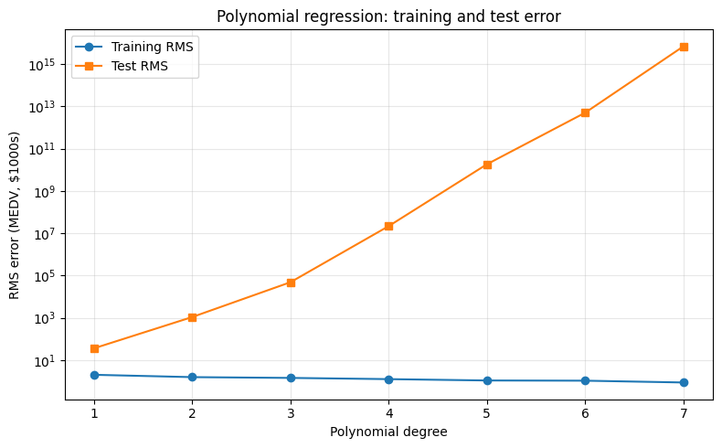
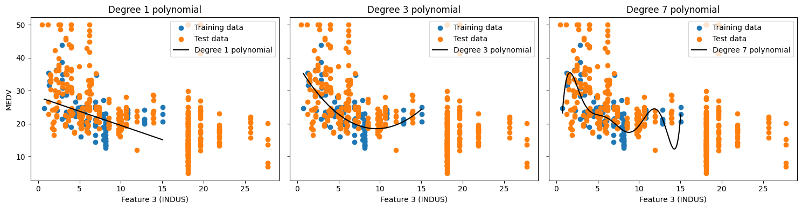
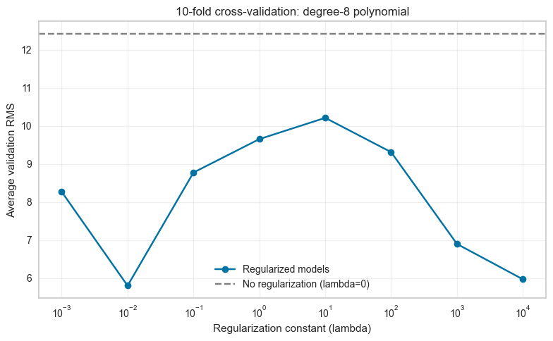
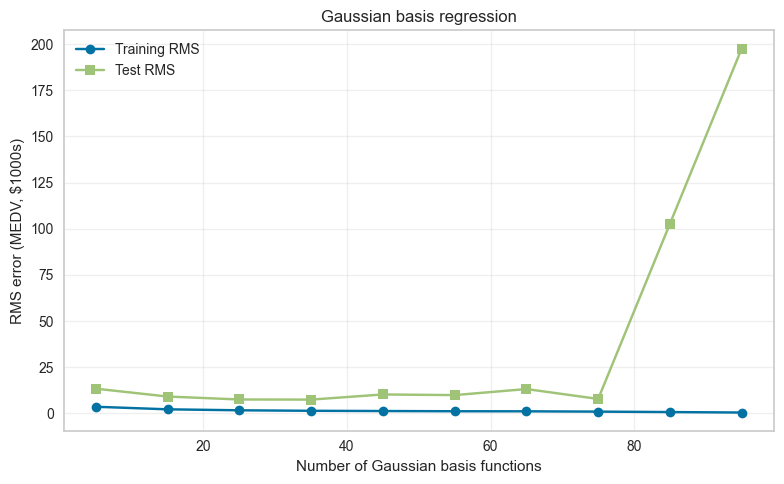
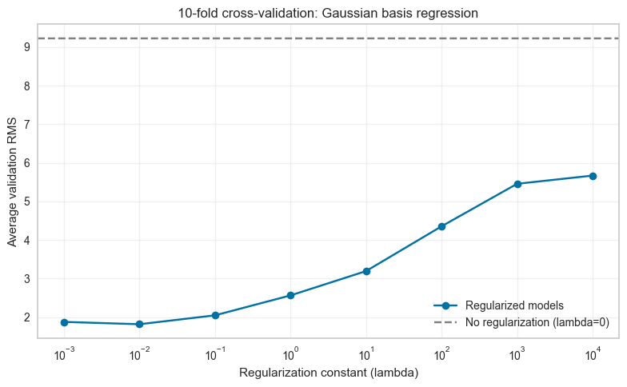

Problem and data
The task is to predict median home value from town-level features in the Boston Housing dataset, then compare polynomial and Gaussian basis function regression.
The dataset has 506 rows, 13 input features, and the target MEDV (median home value, in thousands of dollars). I use the first 100 rows for training and the remaining 406 rows for testing. RMS errors below are reported in the original target units, thousands of dollars.
Features and target are standardized using training-set statistics before fitting, then predictions are converted back to the original MEDV scale. Each cross-validation fold computes its normalization from that fold’s training rows.
Part 1 · Polynomial basis functions
Each feature is expanded into powers through the selected degree. The model includes the bias, individual powers, and no cross terms such as RM × AGE.
(a) Error versus polynomial degree
The training error decreases as polynomial degree increases. This makes sense: adding powers gives the model more degrees of freedom, making it easier to fit the training data, including obscure patterns. The test error moves in the opposite direction. Higher-order polynomials fit the training data more closely but generalize poorly; at the highest degree, the test error is on the order of 10¹⁵ thousands of dollars—more money than there is on Earth. The linear model has the best predictive value for this data.

| Degree | Training RMS | Test RMS |
|---|---|---|
| 1 | 2.037 | 36.445 |
| 2 | 1.578 | 1,097.188 |
| 3 | 1.449 | 48,672.820 |
| 4 | 1.270 | 21,859,680 |
| 5 | 1.097 | 18,358,030,000 |
| 6 | 1.073 | 5,024,089,000,000 |
| 7 | 0.881 | 6.879 × 10¹⁵ |
(b) Degree-1 weights
The vector below includes the bias first, followed by the 13 features in dataset order. These are coefficients for standardized inputs and standardized target.
| Weight | Term | Value |
|---|---|---|
| w₀ | Bias | 0.000000 |
| w₁ | CRIM | -0.226842 |
| w₂ | ZN | 0.020853 |
| w₃ | INDUS | -0.090038 |
| w₄ | CHAS | 0.000000 |
| w₅ | NOX | 0.169991 |
| w₆ | RM | 0.711335 |
| w₇ | AGE | -0.367274 |
| w₈ | DIS | 0.001817 |
| w₉ | RAD | -0.032853 |
| w₁₀ | TAX | -0.059107 |
| w₁₁ | PTRATIO | 0.044295 |
| w₁₂ | B | 0.030699 |
| w₁₃ | LSTAT | 0.025221 |
Both weights seem reasonable. The weight for feature 6 (rooms per dwelling) is quite positive, which makes sense because homes with more rooms can fit more people and are generally worth more. The weight for feature 8 (weighted distance to five Boston employment centers) is also positive, but extremely small. In my experience, people often choose homes based on other amenities before considering distance to employment centers, so a weak relationship seems reasonable. Proximity to employment may slightly increase home prices, but the model suggests that its effect is small. Standardization puts the inputs on comparable scales so that a feature’s units do not dominate the fit just because its raw values are larger.
(c) One-feature polynomial curves
The notebook’s selected feature is INDUS (the third column, selected with X_train[:, 2]). The figure shows the training points, test points, and fitted curves for degrees 1, 3, and 7.

(d) L2 regularization with cross-validation
I expanded the range to see if the trend continues, and it seems to break at both extremes. The optimal regularization is 0.01.

| λ | Average validation RMS |
|---|---|
| 0 | 12.420 |
| 0.001 | 8.273 |
| 0.01 | 5.806 |
| 0.1 | 8.779 |
| 1 | 9.658 |
| 10 | 10.216 |
| 100 | 9.316 |
| 1000 | 6.902 |
| 10000 | 5.973 |
Part 2 · Gaussian basis functions
Each Gaussian basis function responds to the distance from one selected training-row center. Linear regression then learns weights over those basis responses.
This uses all 13 input features. The Gaussian width is set to the median pairwise distance between standardized training rows because the assignment does not specify a width.
(e) Error versus number of Gaussian bases
Test error starts to explode after 75 basis functions. This is similar to what we saw with the polynomial models: giving a model too many degrees of freedom can hurt its performance. Overall, the error is quite good for these models, and performance seems best in the 15–35 basis-function range.

| Basis functions | Training RMS | Test RMS |
|---|---|---|
| 5 | 3.546 | 13.335 |
| 15 | 2.158 | 9.087 |
| 25 | 1.630 | 7.489 |
| 35 | 1.354 | 7.427 |
| 45 | 1.233 | 10.208 |
| 55 | 1.113 | 9.860 |
| 65 | 1.082 | 13.142 |
| 75 | 0.910 | 7.780 |
| 85 | 0.677 | 102.701 |
| 95 | 0.424 | 197.635 |
(f) L2 regularization with cross-validation
These plots demonstrate that regularization can meaningfully decrease our model’s error and improve its generalizability. By penalizing complexity, we guide the model toward simpler estimators that should transfer better from training to test data instead of only improving performance on the training set. The lowest average validation RMS is at λ = 0.01.

| λ | Average validation RMS |
|---|---|
| 0 | 9.218 |
| 0.001 | 1.875 |
| 0.01 | 1.815 |
| 0.1 | 2.045 |
| 1 | 2.562 |
| 10 | 3.192 |
| 100 | 4.352 |
| 1000 | 5.454 |
| 10000 | 5.667 |
Notebook
The notebook contains the implementation cells and the outputs used for the figures and tables in this report.